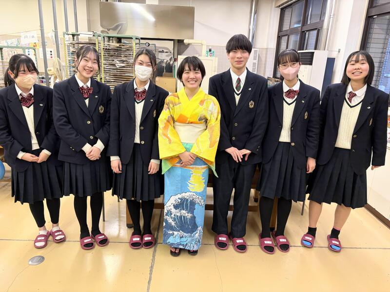
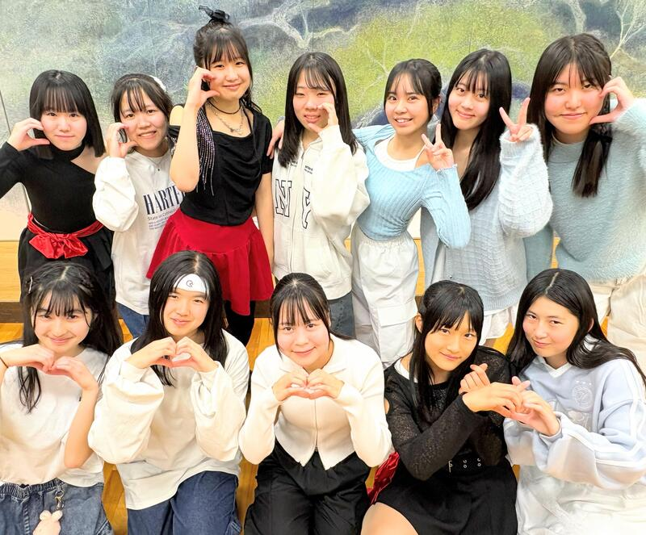
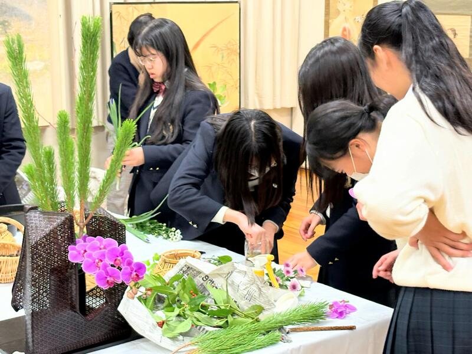

SAGANO BLOG
- >
- SAGANO BLOG
- >
- 日々の様子
2025年02月28日


京・平安文化論ラボです！
今年度、最後の取組、鍵善良房様とのコラボ商品の和菓子が完成しました！
『源氏物語』の最後の十帖は、宇治が舞台となっています。
浮舟という女性が、薫と匂宮（におうのみや）という二人の男性に挟まれ、三角関係となって恋物語が進んでいきます。
詳しい内容は、和菓子に説明書をお付けしておりますので、ぜひお読みいただきたく思います。
浮舟と薫をイメージした「流水花」（写真左）
浮舟と匂宮をイメージした「漂揺」（写真右）
デザインにこだわり、それを形にしていただきました。
４日間限定です！ぜひお召し上がりください！
日時：３月１日（土）、２日（日）、２９日（土）、３０日（日）
場所：重要文化財 旧三井家下鴨別邸様
費用：１，０００円（税込）です。（入館料の６００円は、別途必要です。）
事前申し込みは不要です。
旧三井家下鴨別邸様のHPはこちらから！
https://ja.kyoto.travel/event/single.php?event_id=11556
2025年02月25日
2月13日（木）、韓国の全南科学高等学校から生徒14名と教員11名が来校し、本校生徒と交流しました。全南科学高は、韓国において科学に特化した教育を行う高校で、卒業生の多数が韓国科学技術院（KAIST）等の名門大学に進学するトップ高の１つです。
１限は、２年専修コースの生徒と探究成果の発表を通じた交流を行いました。嵯峨野高、全南高からそれぞれ２件ずつ、英語によるプレゼンテーションと活発な質疑応答が交わされました。


２限は、１年８組の生徒とともに、プラネタリウムを用いた授業を体験しました。
３限は、２年専修コースのスーパーサイエンスラボⅡ（SSLⅡ）を自由に見学し、研究に関する質疑応答や議論による交流を行いました。


４限は１年１組のグローバルインタラクション（GI）の授業において、日本の伝統的な遊びを体験するなど、ともに楽しみました。


昼休みには、本校校長による Welcome Ceremony 後、２年生の国際交流委員とランチを食べながら歓談しました。
午前中だけの短い時間でしたが、大変楽しんでもらい、教員の方にも「感動した！（"Impressive !"）」とのコメントをいただくことができました。今後も交流が続くことを楽しみにしております。


2025年02月20日

２月13日（木）７限のLHRで、２年生を対象に進路ガイダンスⅢを行いました。
各教科担当が来年度４月開講の平常補習の説明を行いました。
また、進路指導部長・第二学年部長からは次年度に向けた心構えについてメッセージが送られました。
生徒は、最終学年、そして受験生になる自分自身の姿を想像しながら、真剣に耳を傾けていました。
まずは学年末テストに向けて準備を進めるとともに、１年後の自分の姿を見通しながら、広い視野で学習に取り組むことを期待しています。


2025年01月31日
シンギュラリティバトルクエスト2024の決勝戦が１月18日・19日に開催され、嵯峨野高校コンピュータ部の1年生からなるチーム「文系人狼」がXクエストで全国１位を、チーム「Mr.4K」がサイバークエストで全国４位をそれぞれ獲得しました。
シンギュラリティバトルクエストとは、高校生がAI/ICTのスキルを競う大会で、文部科学省などが後援しています。従来の５競技(AIクエスト、サイバークエスト、データクエスト、ロボクエスト、Xクエスト)に加え、今年はXクエスト02などの競技が追加されました。
今回のXクエスト決勝戦の課題は、七並べAIの作成でした。囲碁のように相手の状態が全て見えるゲームでは、既にアルファ碁のようなAIがプロ棋士に匹敵する性能を発揮していますが、相手の状態について不完全な情報しか得られない七並べのようなゲームでは、まだまだAIを研究する余地があります。
Xクエストの試合では、各チームの作成したAIが6000回対戦を繰り返し勝率を競いました。嵯峨野高校のチームは、接戦を制して見事全国１位を獲得しました。


サイバークエストは、情報セキュリティに関するクイズ形式の問題を、セキュリティの知識やソフトを駆使して、隠された言葉(Flag)を見つけるCTF形式の競技です。嵯峨野高校のチームはリベンジャーズ枠から出場し、２日にわたる戦いの結果見事全国４位を獲得しました。


応援ありがとうございました！
2025年01月29日
一年間お世話になった地元企業「和衣庵」様のお二人に、着付けを教えていただきながら、デザイン工芸部の部長が自分で作った浴衣を試着しました。「和衣庵」様には、教員の力だけでは及ばない、生徒の好奇心を温かく支えていただき、心より感謝いたします。
冷たい雨の夕方、すがる思いで部長が御社を訪れたのは昨年の２月。それから、灼熱の夏も、切羽詰まった秋も、何度もご指導いただきました。おかげさまで和服に関して何の知識もなかった高校生が、こんなにも素敵な浴衣を作り上げることができました。
「応援」は「挑戦」のあるところに生まれると言います。地域の皆様、様々なことに好奇心を持って挑戦する嵯峨野高校の生徒を、これからもどうぞよろしくお願いいたします。
後を引き継ぐ後輩と記念撮影。部長はもうすぐ引退です。
和衣庵様からいただいた「応援」は、浴衣の制作だけでなく、高校時代に何かを成し遂げた経験となって、部長の未来を支えてくれると思います。本当にありがとうございました。
2025年01月23日
１月23日（木）のLHRで、１年生の主権者教育を実施しました。
今回の主権者教育では、学年の中から有志17名が６チームに分かれ、政策を立案し、学年全員の前で政策提言を行いました。
有志メンバーは、放課後などに時間をかけて準備してきた政策について、社会的意義や費用面からの現実性などを訴えました。映写する資料や発表の口調などもよく工夫されていました。
聴衆側も、積極的に質問を投げかけ、２分間の質疑応答では足りないほどの熱量でした。 探究委員の代表者が、司会進行や質疑応答の対応など、運営を行いました。
投票結果は以下の通りです。
１位 「子育て推進党」 政策：義務教育の幼少化
２位 「コンパクトシティ推進チーム」 政策：未来型コンパクトシティ構想
３位 「ビジネスキッズファミリー」 政策：企業内保育園
2025年01月20日


京・平安文化論ラボです！
嵯峨野高校生による古典入門講座を行います！
高校生の目線で、古典の魅力をお伝えしたいと考えています。
講座の前後に、鶴屋吉信様と京・平安文化論ラボとのコラボ商品である羊羹（枕草子モチーフ「春はあけぼの」、源氏物語モチーフ「紫の想ひ」）を召し上がっていただきます。
日時：２月８日（土）、９日（日）の２日間 ２部制（入れ替え制）
１部は、１３：３０～ ２部は、１５：００～
場所：重要文化財「旧三井家下鴨別邸」様
内容：主に『源氏物語』と『枕草子』をテーマにしています。
２月８日（土）は、①古事記、②桐壺更衣、③藤壺、④紫の上、⑤枕草子
２月９日（日）は、①葵の上、②末摘花、③朧月夜、④明石の君、⑤光源氏、⑥枕草子
というラインナップです。
参加費：１,２００円（税込）です。（入館料の６００円は、別途必要です。）
下鴨神社の糺の森にたたずむ旧三井家下鴨別邸様の美しいお庭を見ながら、楽しい時間を過ごしてみませんか？
お申し込みは、こちらからどうぞ！
https://ja.kyoto.travel/event/single.php?event_id=11296
京・平安文化論ラボ一同、皆様のご参加をお待ちしております！
2025年01月17日
共通テストの説明会・激励会を行いました。
校長先生からはとっておきのアドバイス、進路部長や各担任の先生からは激励の言葉がありました。そして、これまで一緒に頑張ってきた友達と励まし合いながら、緊張とリラックスのバランスのとれた大変よい表情で下校しました。
嵯峨野生のみんなが、落ち着いて、いつも通りに、実力を発揮できるよう応援しています。


2024年12月26日
12月27日(金)の午前中に１・２年生の希望者18名が参加し、京都大学工学部の桂キャンパスを見学してきました。工学部長の先生や工学部の卒業生のお話を伺い、その後研究室や図書館、記念講堂の見学をさせていただきました。参加生徒一人一人にとって、進路選択に向けた貴重な機会になったと思います。
2024年12月24日


12月19日（木）７限のLHRで、２年生を対象に卒業生講話を行いました。
本校の卒業生６名が、文理別に志望校の決定や受験勉強における経験談、大学生活の様子、学部・学科の魅力などを語ってくれました。
生徒たちは、先輩からのメッセージにメモを取りながら真剣に耳を傾けており、講話終了後には積極的に質問をする姿もみられました。今後自分が何に取り組むべきか、どのような力をつけなければならないかを具体的に考えるよい機会となりました。
長かった２学期が終了します。１年後の受験生としての姿を見通しながら、主体的に学ぶ姿勢をさらに深化させることを期待しています。
2024年12月16日

12月12日（木）７限のLHRで、３年生を対象に大学入学共通テストの説明会を行いました。
各ホームルーム教室にて、スライドと担任による説明で受験上の注意事項等を確認しました。
共通テストまであと約１か月。当日に実力が出せるよう、準備をしっかりとしておきましょう。
2024年12月13日
今年度の芸術文化展の取り組みは、嵯峨野高校の教育テーマ「ほんまもんの学び」です。本日のお昼休みには、本校音楽教員（ピアノ）とプロのフルート奏者であられる松村裕絵 氏による「ほんまもんコンサートVol.1」が開催されました！

先生もいつもと違うプロの表情を見せます。

会場は140名を超える満員御礼。

嵯峨野生に少し早いクリスマスプレゼント。夢のようなひと時をいただきました！
また、夕方にはダンス同好会のみなさんの発表！「かわいい〜」の声が飛ぶ中、見事に踊り切りました！



その他にも芸術文化展では、伝統工芸作家・竿頭斎 氏の竹工芸作品と華道部・工芸部のコラボレーション展示などもご覧いただけます！

今年度の展示は「ほんまもんの学び」を提供する仕掛けがいっぱいです。
お土産用の嵯峨野プラ板も大好評！

12/14(土)15時まで！保護者等の皆様、ご家族でぜひご来場ください。
2024年12月13日

芸術文化展では能楽研究者・天野文雄先生のご講演の後、狂言部が狂言「舎弟」を披露しました。


部員さんに、なぜ狂言部に入ったのか尋ねると「昔から狂言が好きで、狂言部があるから嵯峨野に来た」とのこと。生徒たちのよく響く声、堂々とした立ち振る舞いに天野先生も舌を巻いておられました。
 展示では地元企業「和衣庵」さんにご指導いただき、完成した浴衣が華やかに飾られています。その他、嵯峨野生の集中力を示すような家庭科の刺し子刺繍作品や、嵯峨野生が世界をどのように見つめているのか感じさせる写真部さんの展示も魅力です。
展示では地元企業「和衣庵」さんにご指導いただき、完成した浴衣が華やかに飾られています。その他、嵯峨野生の集中力を示すような家庭科の刺し子刺繍作品や、嵯峨野生が世界をどのように見つめているのか感じさせる写真部さんの展示も魅力です。
そして、今回初の取り組み、芸術文化展期間限定YouTubeです。これには生徒も興味深々。芸術文化展期間終了後は安全のため、チャンネルごと削除する予定です。もし、お気に入りの作品があれば、早めに「いいね」をよろしくお願いいたします！
2024年12月11日
芸術文化展の様子をお伝えします！
お昼の体育館ではバトン部の発表がありました。嵯峨野の妖精たちがサンタに扮してクリスマスソングでダンスを披露すると、黄色い声援で「かわいい〜」と大盛り上がりする前列女子とは対照的に、緊張したのか少し離れた所から、きちんと正座で見ている男子の姿が印象的でした。


さて、コモンホール受付横には美術部・工芸部の作品が並びます。京都府代表として近畿や全国、京都府庁展示などの選出された力作揃いです。
その横には染色選択者の作品が色彩のシャワーのように降り注ぎます、
もはや校内での認知度が鰻登りの埴輪の「美須子」がペットの「まろちゃん」を連れて今年も皆様にご挨拶。陶芸教員の作品のなんとも可愛い猫たちと、100%嵯峨野産の校有林の粘土で作ったカードスタンド（お土産です！）もお出迎えします。

芸術選択者の陶芸・染色・美術の作品に加えて、
12月14日（土）には以下の発表が予定されています。
【ダンス同好会10:00~10:30 コモンホール】【軽音楽部10:00~12:30 音楽室】
【吹奏楽部11:00~11:30 コモンホール】【演劇部13:30~13:45 コモンホール】
保護者等の皆様もぜひご来校ください！
2024年11月21日

「秋からは受験生」
第２学年部では、毎年この時期に受験生としての意識を高めるべく、「ウィンターチャレンジ」と称して綿密な学習計画のもとで密度の濃い学習を行うための取り組みを行っています。本日のLHRではウィンターチャレンジⅠとして、クラスごとに担任の先生が進路実現に向けた学習のあり方について説明し、その内容を受けて期末テストに向けた学習計画を立てる取り組みを行いました。定期テストに向けた日々の生活リズムや科目ごとの学習内容のバランスを克明に記録し続けることで、今後の受験計画の立て方に活かして欲しいと思います。期末テスト後の12月中旬には「ウィンターチャレンジⅡ」として、冬休みを含めた中長期的な学習計画について、各自の進路目標を見据えながら立案する予定です。生徒達が自立した学習者として、意識を高くもって自分自身と向き合い成長していけるよう、今後も応援していきたいと思います。
2024年11月18日
11月16日（土）第44回近畿高等学校総合文化祭に選出された美術部が開催地である福井県に行ってきました！
会場では京都府代表として選出された美術部２名の作品が飾られています。


{kind=link}
{kind=link}
{kind=link}
{kind=link}
{kind=link}
{kind=link}
{kind=link}
{kind=link}
{kind=link}
{kind=link}
{kind=link}
{kind=link}
{kind=link}
{kind=link}
{kind=link}
{kind=link}
{kind=link}
{kind=link}
{kind=link}
{kind=link}
{kind=link}
{kind=link}
{kind=link}
{kind=link}
{kind=link}
{kind=link}
{kind=link}
{kind=link}
{kind=link}
{kind=link}
{kind=link}
{kind=link}
{kind=link}
{kind=link}
{kind=link}
{kind=link}
{kind=link}
{kind=link}
{kind=link}
{kind=link}
{kind=link}
{kind=link}
{kind=link}
{kind=link}
{kind=link}
{kind=link}
嵯峨野高校の美術部は、来年度の全国総合文化祭・近畿総合文化祭・京都府庁展示にも、京都府代表として選出されています。
福井県の駅前はジュラシックパーク（動いて鳴きます。）！
恐竜王国の後押しを受けて、生徒たちの活躍が益々期待される展覧会でした。


2024年11月15日
１１月８日(金)､第１学年専修コースを対象に、京都大学大学院農学研究科助教の大土井 克明先生と、本校卒業生である櫟原さんにご講演をいただきました。
講演ではまず大土井先生から、自然界における資源循環の仕組みをはじめ、現在の人間社会における食糧生産の課題と、その解決策としてのメタン発酵についてお話いただきました。


続いて、現在博士後期課程で地域環境科学を専攻されている櫟原から、ご自身の研究と大学生活についてのお話をしていただきました。生徒たちは普段聞けない研究の話はもちろん、大学生活についても興味を持って聞いている様子でした。
お話の後、生徒が持ってきた物を使ってメタン発酵の実験をしました。


この実験は櫟原さんが実際に行っておられる実験で、研究室から道具や材料を持ってきてくださいました。生徒は砂糖や片栗粉などの発酵できそうなものから、消しゴムやチョークのような発酵できなさそうなものまで、様々なものを持ってきおり、現在は、探究委員が中心となって、どれが最もメタンを発生するのかを調べているところです。
今回のサイエンスレクチャーでは、メタン発酵を利用した資源循環についての知見が深まったことに加え、最前線で活躍しておられる研究者の考えを聴けたことは、生徒にとって今後の進路選択の参考になったと思います。また、卒業生のお話を聴けたことで、大学に進んだ後の姿を少し想像できるようになったのではと思います。
2024年11月15日
本日、音楽の授業にて、カップスの演奏発表会が行われました。
 プラスチックコップの音を基本に手拍子や足拍子で、まるで踊っているかのように、リズムを刻んでいきます。
プラスチックコップの音を基本に手拍子や足拍子で、まるで踊っているかのように、リズムを刻んでいきます。


また、その他の芸術科目も期末テスト後に開催される、芸術文化展に向けて
作品作りの真っ最中です。


本年度は「ほんまもんの学び」をテーマに、
12月9日(月)〜14日(土)コモンホールにて芸術文化展を開催いたします。
保護者等の皆様のご招待日もございます。
後ほど、さくら連絡網にてご連絡いたしますので、
ぜひ、お子様と共に「ほんまもんの学び」をご体感ください！
2024年11月11日
11月９日（土）、「令和６年度 みやびサイエンスガーデン」を京都工芸繊維大学で開催しました。このイベントは、京都府教育委員会と、SSH指定校である洛北高校・嵯峨野高校・桃山高校が主催となり、生徒たちが日々の探究の成果をポスターセッションの形式で発表しました。本校からは35件のポスター発表を行い、他校の生徒や先生方、来賓の方々と活発な議論交流を行いました。
本校２年生は、これまでスーパーサイエンスラボⅡで取り組んできた探究の経過を報告しました。
またサイエンス部が日々の研究の成果を報告しました。
.jpg)
.jpg)
準備の段階では初めてのポスター発表を不安に感じている生徒もいましたが、当日には、特に質問されたところを丁寧に説明するなど、それぞれ工夫しながら発表を終えることができました。今後は頂いた質問やコメントをもとにさらに実験を重ね、自身の研究についてより深く、探究していってくれることを期待しています。

.jpg)
当日は発表生徒だけでなく１年生も見学に参加し、来年は自分たちがこの場で発表するというイメージを持つことができました。嵯峨野の探究の伝統はこうして次世代へとつながっていきます！
〒616-8226
京都市右京区常盤段ノ上町15番地
TEL 075-871-0723 FAX 075-871-0724
E-mail [email protected]
Copyright (C) 京都府立嵯峨野高等学校 All Rights Reserved.